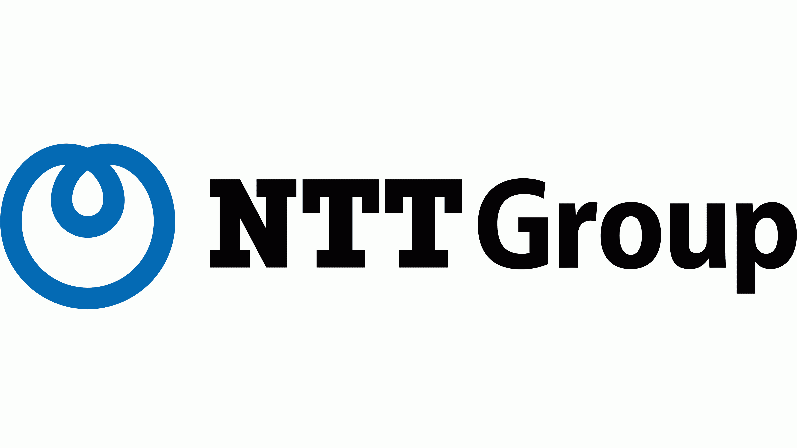
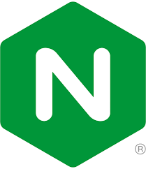
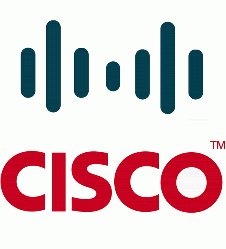
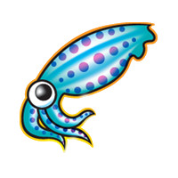

“NTX is a fun, interactive workspace which focuses on innovative culture, inclusion and sustainability”
ABOUT YOU
YOU WANT TO LEARN HOW TO MANAGE LARGE SCALE SECURITY INFRASTRUCTURES
Heard of CI/CD
concept, infras as code and agility
ORIENTATION TOWARD DEVOPS
Wants to adhere to devops principles.
DRIVEN BY THE DESIRE TO AUTOMATE AND SCALE EVERYTHING
Be able to understand domain
specific topics and how they impact the team’s operational success.
COMMUNICATION SKILLED
wants to be part of a team and learn from them.
As a Intership Devops @NTX, you will …
Work on a defined project
Should be able to study the
area and ready to work on it
Establish strong contact
To collaborate well with your mentor
and Build relationships with colleagues.
Build
Design concrete solution
which meet well defined-objectives
Establish comprehensive documentation, guidelines and blueprints parts of your intership report.
Be Team multiplier
Write high level and low level technical documentation
Adopt a positive engineering culture toward best practives.
NTX is a young start-up founded by powerful and leading IT companies


Our mission is to manage
and evolve the Network, Security and UC/VC infrastrustures of the European Commission. We provide a
challenging and leading edge technological environment with unpreceded performances and capacities,
supported by the open source community and the biggest technology vendors.
You may be fit for this role if you have…
Exposure on software/security/network area
Idealy knowledge on Ansible, containerization and CI/CD.
Motivation to create and improve configuration management and playbooks
Wants to use automation software, version control tools and CI/CD.
Ability to follow devops approach.
Enjoy collaborating and sharing ideas with team








